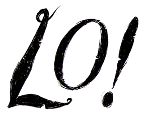
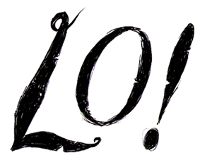

Two halves of a record, out now."A multi-layered treasure trove of mind-altering sounds
and songs...in equal parts warm, frightening, articulate
and above all beautiful."
Clash
Click here to buy from the Seed Records shop
Click here for press and reviews
Click here to listen to Sunday at the margin
from Lo!
Or for more from the world of Sleeps in Oysters:


 
